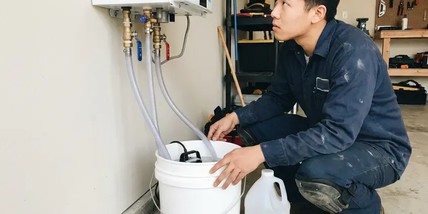

Water Heater Maintenance in Jackson, TN
Regular water heater maintenance by BGV Plumbing in Jackson, TN can extend its lifespan, boost efficiency, and prevent unexpected failures.
- Quick, reliable service
- Safety Valve Testing Included
- Skilled, Certified Plumbers
- All Major Brands Serviced

Need Water Heater Maintenance in Jackson, TN?
We service gas and electric units from all major brands, in garages, closets and crawl spaces.
Expert Water Heater Maintenance in Jackson, TN
BGV Plumbing maintains gas and electric tank water heaters as well as tankless units. We flush sediment, inspect the anode rod, test the temperature and pressure relief valve and check venting, gas connections and burner assemblies.
Our expertise includes:
- Testing pressure relief valves
- Full tank flushes to remove hard water sediment
- Sediment flush for better efficiency and lifespan.

Additional Plumbing Maintenance Services in Jackson, TN
Our maintenance and specialty plumbing services in Jackson, TN catch small problems before they become emergencies.


Tankless Water Heater Maintenance in Jackson


Customers
Why Choose BGV Plumbing for Water Heater Maintenance in Jackson, TN?
A water heater that is never flushed can lose efficiency and fail years early. A short annual visit helps you avoid cold showers and leaking tanks.
- Safety Assurance, We check for gas leaks, carbon monoxide, and proper ventilation, keeping your family safe.
- Prevent Breakdowns, Catching small issues early prevents major, costly failures and keeps hot water reliable.
- Energy Savings, A well-maintained water heater uses less energy, lowering your monthly utility costs.
Citywide Coverage
BGV Plumbing provides extensive water heater maintenance coverage across every neighborhood of Jackson. Whether you're in an older district or a newer subdivision, our plumbers are equipped to reach you promptly.
Experienced Team
Our technicians service brands like Rheem, A.O. Smith, Bradford White, State, Rinnai, Navien and Noritz. They know each manufacturer's maintenance needs and common wear points.
Safety-First Approach
During maintenance, we thoroughly check for any potential safety hazards, such as gas leaks, carbon monoxide risks, or faulty electrical connections. Our safety checks are a cornerstone of our water heater maintenance service.
Trusted Certified Jackson Plumbing Services Professionals
At BGV Plumbing, we take pride in providing licensed, certified plumbing services throughout Jackson, TN. Backed by leading industry credentials, our experienced plumbers combine technical skill with genuine customer care. Whether it is repair, installation, or maintenance, we follow strict safety and quality standards to deliver long-lasting results you can trust.
Call Us Now PHCC Plumbing Contractor Recognition
PHCC Plumbing Contractor Recognition Better Business Bureau (BBB) Accreditation
Better Business Bureau (BBB) Accreditation Angi Certified Pro
Angi Certified Pro ISO 9001 Quality Management Certification
ISO 9001 Quality Management CertificationThorough Water Heater Maintenance Services in Jackson, TN
Standard Tank Water Heater Maintenance in Jackson
Our standard tank water heater maintenance includes flushing the tank to remove sediment buildup. Mineral buildup from harder water can shorten the life of water heaters and leave scale on faucets, showerheads and dishwasher parts. We also inspect the anode rod, test the temperature and pressure relief valve, and check for any leaks or corrosion on the tank and connections. This service helps prevent premature failure and improves heating efficiency, keeping your energy bills in check.

T&P Valve and Safety Testing in Jackson, TN
The temperature and pressure relief valve keeps your water heater from building dangerous pressure. We test it by lifting the lever and checking that it opens and reseats. A valve that leaks or will not open gets replaced. We also check that the discharge pipe runs to an approved location. Expansion tanks are checked for proper air charge if you have one.
Attic and Garage Water Heater Maintenance in Jackson
Many homes have water heaters in garages or attics, where heat, cold and tight access add stress to the unit. Attic units need working drain pans and drain lines to prevent ceiling damage if the tank leaks. We check the pan, drain line, venting and access platform. Garage units should be raised and protected where required for gas appliances. We confirm your setup meets local code.
Water Heater Leak Detection and Prevention in Jackson, TN
Leaks are a common issue that can lead to significant water damage if not caught early. Our maintenance service includes a thorough inspection of all water heater connections, pipes, and the tank itself for any signs of leaks or corrosion. We examine the drain pan and surrounding area for moisture. Early detection and repair of small leaks can prevent larger, more destructive problems, protecting your home's floors and interior from water damage.
Thermostat and Heating Element Checks in Jackson
For electric water heaters, we test the thermostat and heating elements to make sure they work correctly and hold an accurate temperature. Faulty elements or thermostats can lead to too little hot water or wasted energy use. For gas water heaters, we inspect the burner assembly and pilot light. Humidity encourages condensation and corrosion on cold water lines and fittings in crawlspaces, which is worth checking during routine service. Properly working components are essential for both efficiency and safety.
Anode Rod Inspection and Replacement in Jackson
The anode rod is a sacrificial part in your water heater designed to corrode instead of the tank itself. Depending on your water chemistry, these rods can wear down faster than you might think. During maintenance, we inspect the anode rod's condition and recommend replacement if necessary. A healthy anode rod is crucial for preventing rust and extending the lifespan of your water heater tank, saving you from a costly full replacement.
Electric Water Heater Element Service in Jackson, TN
Electric water heaters use upper and lower heating elements controlled by thermostats. Sediment can coat the lower element and cause it to fail. We test both elements and thermostats with the power off and replace parts as needed. A failed element is often the reason for lukewarm water or running out of hot water fast. Proper testing avoids replacing parts that are still good.

Preventative Maintenance Plans in Jackson, TN
BGV Plumbing offers comprehensive preventative maintenance plans for homeowners in Jackson, TN. These plans include annual or twice-yearly service appointments, priority scheduling, and sometimes discounts on repairs. Enrolling in a plan gives your water heater consistent professional care, helping you avoid unexpected breakdowns and keep peak efficiency year-round. It's an investment in long-term reliability.
Water Heater Maintenance Near Me in Jackson, TN
Looking for reliable water heater maintenance "near me" in Jackson, TN? BGV Plumbing is your local expert, providing prompt and professional service right in your neighborhood. We understand the needs of homes in this area and are always ready to respond.
When you search for water heater maintenance in Jackson, you want a trusted, local company. Our team is located to serve all parts of Jackson, so we can get to your home promptly for efficient, thorough water heater care.
BGV Plumbing at a Glance
- Licensed and insured plumbers serving Jackson, TN
- 24/7 emergency service with same-day scheduling
- Upfront, flat-rate pricing before work begins
- 4.9-star rated by 932+ Tennessee customers
Jackson Map
Jackson Information
- Population
- 68,264
- Area codes
- 731/901/615
- Service area
- Jackson and communities within 40 miles
- Nearby
- Bartlett, Collierville, Memphis, Clarksville
Regular water heater maintenance is particularly valuable for homes in Jackson, TN, where water hardness and seasonal temperature swings can speed up wear on your hot water system. Humidity promotes condensation and corrosion on cold water lines and fittings in crawlspaces, which is worth checking during routine service.
Expert Services
Trust our professionals for reliable BGV Plumbing solutions in Jackson, TN.
Our Specialized Plumbing Services in Jackson, TN
At BGV Plumbing, we provide a complete range of plumbing services across Jackson, TN. From leak detection to full system installations, our team ensures fast, precise, and affordable service for both residential and commercial properties. Explore our core services below:


How Our Water Heater Maintenance Process Works in Jackson, TN
We follow a step-by-step approach to water heater maintenance, so every critical component is inspected and serviced for performance and longevity.
Request a Quote
Call us at (615) 518-0893 or fill out our online form to schedule your water heater maintenance. We'll gather some basic information about your system and set up a suitable appointment time.
On-Site Inspection
Our certified technician will arrive on time and perform a comprehensive inspection of your water heater. This includes checking for leaks, corrosion, proper venting, and overall system health.
Thorough Maintenance
Based on the inspection, we'll perform needed maintenance tasks like flushing the tank, testing valves, inspecting heating elements or burners, and checking the anode rod. We address all critical components.
Frequently Asked Questions About Water Heater Maintenance in Jackson
The cost of water heater maintenance in Jackson, TN can range from $120 to $250, based on the type of water heater (tank or tankless) and the services required. This typically includes a full flush, anode rod inspection, and safety checks. More complex issues or parts replacement would be an additional cost.
Most tank flushes and inspections take about 45 to 90 minutes. Tankless descaling usually takes 1 to 2 hours.
Sediment buildup consists of mineral deposits, mainly calcium and magnesium, that settle at the bottom of your water heater tank. Mineral buildup from harder water can shorten the life of water heaters and leave scale on faucets, showerheads and dishwasher parts. Sediment reduces efficiency, causes strange noises, and can lead to premature tank failure if not flushed regularly.
The anode rod is a metal rod inside your water heater that sacrifices itself to keep the steel tank from corroding. It attracts corrosive elements in the water. Regular inspection and replacement of a depleted anode rod are crucial for extending the lifespan of your water heater, particularly where water quality varies.
BGV Plumbing stands behind all our services with a solid workmanship warranty. We make sure our maintenance is performed correctly and effectively. Specific warranty details are provided when service is complete.
While some basic tasks like flushing a tank might seem DIY-friendly, professional maintenance is strongly recommended. Our technicians have the right tools, knowledge, and experience to perform thorough safety checks, identify potential hazards, and meet local codes, which a DIY approach might miss.
While maintenance itself isn't warrantied like a repair or installation, we guarantee the quality of our workmanship. If an issue directly related to our maintenance service arises within a specific period, we will address it promptly. Your satisfaction is our top priority.
During a water heater flush, we drain the tank completely and then refill it, letting water flow out through the drain valve until it runs clear. This process removes mineral deposits and sediment that accumulate at the bottom of the tank, which can hurt efficiency and cause damage.
What People Are Saying About Our Plumbing Experts?

Sofia M.
Two new toilets installed in one visit, no mess left behind, and the tech even adjusted a faucet he noticed was dripping. Fair pricing and really friendly.
Toilet Installation · Memphis, TN
Mark T.
When our office needed drain cleaning, BGV Plumbing provided quick, reliable service. The plumber arrived on time and made sure every drain flowed perfectly before leaving. Very satisfied.
Drain Cleaning · Jackson, TN
Robert G.
The trenchless sewer replacement saved our front yard. They walked us through the camera inspection footage first so we knew exactly what we were paying for.
Sewer Line Replacement · Franklin, TN
Patricia H.
We had a slab leak that two other companies could not find. BGV Plumbing located it in under an hour, explained our options, and the price matched the quote to the dollar.
Slab Leak Repair · Franklin, TN
Daniel K.
A pipe burst at 11 pm and they actually answered. The plumber showed up within the hour, shut everything down, and had us back to normal the next morning. Could not ask for more.
Emergency Plumbing · Spring Hill, TNJames P.
Our commercial plumbing system had a leak under the sink, and BGV Plumbing handled it professionally. The plumbers arrived quickly and restored everything without disruption to our customers.
Commercial Plumbing · Bartlett, TN